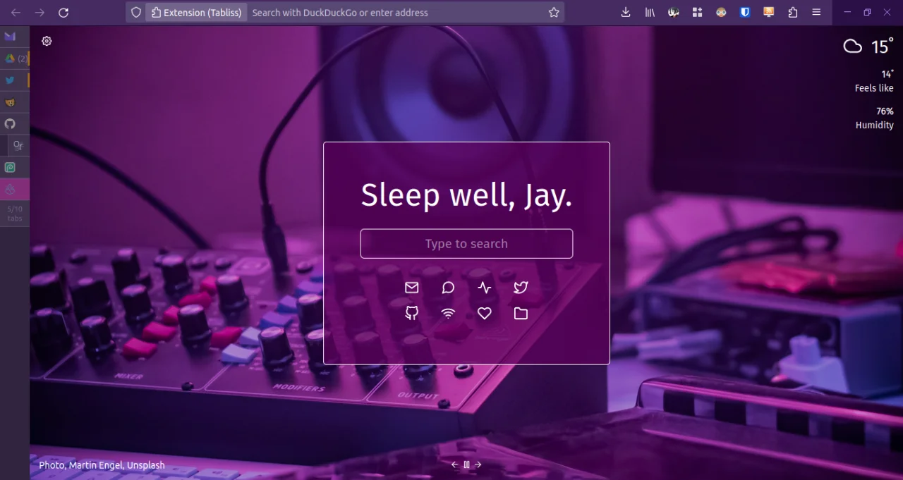

Firefox Tree Tabs Tu(tour)ial
July 02, 2023
This is the first installment of my “FOSS recommendations” series (or something.) It started off as a single post, but I ended up having so much to say about each recommendation that I decided they’d be better off with their own dedicated posts.
First on the list, of course, is Mozilla Firefox, an internet browser you’ve probably heard of. It is widely beloved for its consideration of user privacy and customization, earning it a loyal fanbase. Although its privacy settings are very configurable out of the box, the more staunchly data-protective user might prefer Librewolf, a privacy-oriented Firefox fork.
As for customization, you can directly edit the browser CSS to make it look however you want. Firefox has also introduced tools like Firefox Color to allow you to easily modify your color scheme. There are also a plethora of add-ons for Firefox, many of which allow for CSS tweaking.
Here’s a demo of my current Firefox setup:

I’ve achieved this look with some CSS and a few add-ons. My setup features:
- A collapsible sidebar (expands on hover)
- An active/inactive tab counter that functions as a new tab button
- Italicized inactive/unread tabs
- Clickable favicon to expand/collapse tab tree
- Hover to see what tab number you’re on
- Tab titles and close button disappear when sidebar is collapsed
- Top (horizontal) tabs are hidden in favor of tree tabs
- Window control buttons (minimize, maximize, close) are merged with the toolbar
- Active tab highlight color is selected from your Firefox theme
- Purple/pink color scheme
If you’re a tab addict who cares deeply about screen real estate, continue reading for instructions on how to recreate my setup! This tutorial presumes you’ve already downloaded Firefox.
Step 1: Customize Firefox Color
- Get the Firefox Color extension.
- Head to the website.
- Select whatever theme you want. Or make your own. You can also use mine, a slightly modified version of a pre-existing theme.
{kind=link}
Step 2: Get tree (vertical) tabs
- Download Piro’s Tree Style Tab add-on.
- From your add-on list, you can right click and select “Manage extension”.
- Click the tab that says “Preferences”.
- Select the Photon theme. The Proton theme will also work.
- Scroll down and reveal the “Advanced” options. Copy and paste the following Gist code into the code box. Note that your vertical tab text might vanish. Don’t worry about it! We’ll deal with the collapsing sidebar in step 3.
- Note: Most of the changes I’ve made here are pulled from this Github page full of tweaks.
Step 3: Access your Firefox CSS
- In the taskbar, type
about:config, press enter, and accept the risk. - Copy and paste
toolkit.legacyUserProfileCustomizations.stylesheetsin the searchbar. Make sure it’s set to true. If not, click it twice. - Type
about:profilesin the taskbar and press enter. - Under “Profile: default-release” (your default profile), locate the “Root Directory” tab and click “Open Directory”.
- Create a folder called “chrome”.
- Create a file within that folder called
userChrome.css - Copy and paste the following Gist into the code box. Restart Firefox to see changes.
- *Note that line 14 may require you to make alterations based on your viewport.
Step 4: Customizing Tabliss
- For my new tab page, I use a FOSS add-on called Tabliss. Grab it for yourself!
- Tabliss lets you fine-tune what backgrounds you want to display. They use the Unsplash API to allow you to select custom collections of photographs (along many other options). I made my own collection here, which you can reference in the Tabliss background settings by adding “_zqqJaaI4YQ” under “Collection.”
- You should add similar widgets, such as “Quick Links,” “Search,” and “Greeting”.
- After you’re done, select a new widget for “Custom CSS” and add this snippet. It adds Fira Sans, a translucent background box for the center, and modifies the search bar a bit.
@import url('https://fonts.googleapis.com/css2?family=Fira+Sans&display=swap');
.Slot.middleCentre {
background-color: rgba(90, 0, 90, 0.75); /* can change this */
border-radius: 5px;
border: 1px solid;
padding: 3em;
}
.Search input{
border: 0;
font-size:0.8em;
outline:1px solid;
border-radius: 5px;
padding:0.5em;
}
Congrats, you are me! If all has gone well, your browser should look very cool and sexy like so:
{kind=link}